OAuth2 和 OpenID Connect
OAuth 是什么
OAuth 2.0 是一个授权协议，它允许软件应用代表（而不是充当）资源拥有者去访问资源拥有者的资源。应用向资源拥有者请求授权，然后取得令牌（token），并用它来访问资源。
虽然 OAuth 基本上不关心它所保护的资源类型，但它确实很适合当今的 RESTful Web 服务，也适用于 Web 应用和原生应用。
OAtuth 协议规范是这样定义的：
OAuth 2.0 框架能让第三方应用以有限的权限访问 HTTP 服务，可以通过构建资源拥有者与 HTTP 服务间的许可交互机制，让第三方应用代表资源拥有者访问服务，或者授予权限给第三方应用，让其代表自己访问服务。
其中需要关心的组件角色如下：
- 资源拥有者有权访问受保护资源，并能将受保护资源的访问权限委托出去。与 OAuth 系统中的其他组件不同，资源拥有者不是软件。在大多数情况下，资源拥有者是一个人，他使用客户端软件访问受他控制的资源。至少在部分过程中，资源拥有者要使用 Web 浏览器（通常称为用户代理）与授权服务器 交互。资源拥有者可能还会使用浏览器与客户端交互。
- 受保护资源是资源拥有者有权访问的组件，在访问时需要 OAuth 访问令牌。这样的组件有多种形式，但大多数情况下是某种形式的 Web API。受保护资源需要验证收到的令牌，并决定是否响应以及如何响应请求。在 OAuth 架构中，受保护资源对是否认可令牌拥有最终决定权。
- 客户端是代表资源拥有者访问受保护资源的软件。在 OAuth 中，只要软件使用了受保护资源上的 API，他就是客户端。它使用 OAuth 来获取访问权限。得益于 OAuth 的设计，客户端通常是 OAuth 系统中最简单的组件，它的职责主要是从授权服务器获取令牌以及在受保护资源上使用令牌。客户端不需要理解令牌，也不需要查看令牌的内容。相 反，客户端只需要将令牌视为一个不透明的字符串即可。OAuth 客户端可以是 Web 应用、原生应用，甚至浏览器内的 JavaScript 应用。
- 授权服务器是一个 HTTP 服务器，它在 OAuth 系统中充当中央组件。提供了一种机制来弥补客户端与受保护资源之间的间隙。授权服务器对资源拥有者和客户端进行身份认证，让资源拥有者向客户端授权、为客户端颁发令牌。某些授权服务器还会提供额外的功能，例如令牌内省、记忆授权决策。
整个系统的目标是：让客户端代表资源拥有者访问受保护资源。
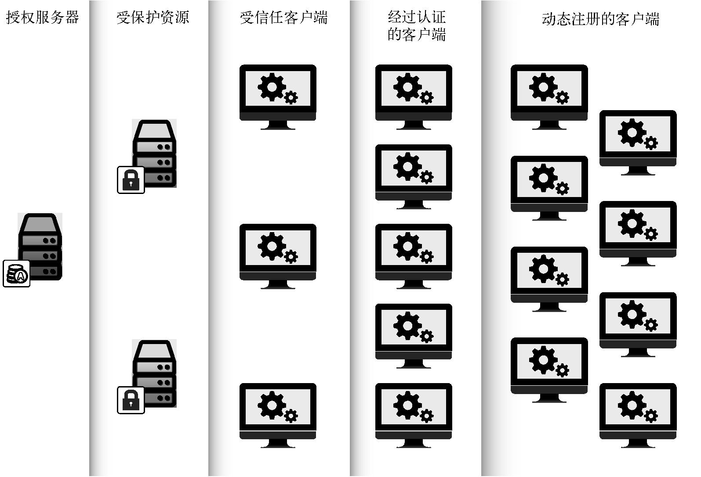
OAuth 的优缺点
OAuth 中假设不受控的客户端总是比授权服务器或者受保护资源多出好几个数量级。这样架构决策导致的结果就是，尽可能将复杂性从客户端转移到服务端。对于客户端开发人员是好事，因为客户端成了系统中最简单的部分。客户端开发人员不需要和别的安全协议那样，处理签名规范化以及解析复杂的安全策略文档，也不需要担心处理敏感的用户凭据。OAuth 令牌提供了一种比密码略复杂的机制，比旧时代的凭据共享和凭据盗用更加细粒度，安全和可控，使用得当，其安全性比密码高得多。
另一方面，授权服务器和受保护资源要承担更多的复杂性和安全性方面的责任。即使单个客户端被攻破，也不会泄漏受保护资源的凭据，因为客户端根本没有机会接触受保护资源的凭据。然而，授权服务器则需要管理和保护系统中所有客户端和用户的凭据和令牌。虽然这确实使它更容易成为攻击目标，但是保护单个授权服务器要比保护上千台由不同开发人员开发的客户端要容器得多。
OAuth 2.0 的可扩展性和模块化是其最大的优势之一，因为这使得该协议适用于各种环境。这种灵活性也导致不同的实现之间存在的兼容性问题。当开发人员想在不同的系统上实现 OAuth 时，它提供的众多自定义选项容易使人困惑。
更糟糕的是，OAuth 的某些自定义选项可能会被用在错误的地方或者实施不当，进而导致不安全的实现。这些漏洞在 OAuth 威胁模型文档 - RFC 6819 有详细的讨论。
OAuth 不能做什么
- OAuth 没有定义 HTTP 协议之外的情形。由于使用 bearer 令牌的 OAuth 2.0 并不提供消息签名，因此不应脱离
HTTPS（TLS 上的 HTTP）使用。 - OAuth 不是身份认证协议。虽然可以用它构建一个，比如
OpenID Connect。但 OAuth 事物本事并不透露关于用户的信息。 - OAuth 没有定义用户对用户的授权机制，尽管它在根本上是一个用户向软件授权的协议。OAuth 假设资源拥有者能够控制客户端。要使资源拥有者向另一个用户授权，仅使用 OAuth 是不行的。但这种授权并不罕见，
User Mananged Access协议就是为此而生的，它规定了如何使用 OAuth 构建一个支持用户对用户授权的系统。 - OAuth 没有定义授权处理机制，OAuth 提供了一种方法来传达授权委托已发生这一事实，但是它并不定义授权的内容。相反，由服务 API 定义使用权限范围、令牌之类的 OAuth 组件来定义一个给定的令牌适用于哪些操作。
- OAuth 没有定义令牌格式。实际上，OAuth 协议明确声明了令牌的内容对客户端是完全不透明的。但是，颁发令牌的授权服务器和接收令牌的受保护资源仍然需要理解令牌。这个层面的互操作性要求催生了
JSON Web Token（JWT）格式和令牌内省协议。 - OAuth 2.0 没有定义加密方法。OAuth 2.0 没有定义新的加密机制，而是允许借用通用的加密机制，这种加密机制不止适用于 OAuth。这种有意的遗漏催生了 JSON 对象签名和加密（
JOSE）规范套件。该套件提供了一系列通用的加密机制，可以配合 OAuth 使用，也可以脱离 OAuth 使用。该套件也可以用于一种消息级的加密协议，该协议使用了OAuth PoP令牌。 - OAuth 2.0 不是单体协议。该规范被分成了多个定义和流程，每个定义和流程都有各自的使用场景。
OAuth 2.0 授权许可的完整过程
我们将展示一个基于 Web 的客户端应用的授权码许可机制。该客户端将以交互方式得到资源拥有者的直接授权。
授权码许可中用到了一个临时凭据 —— 授权码，来表示资源拥有者同意向客户端授权，如图所示。
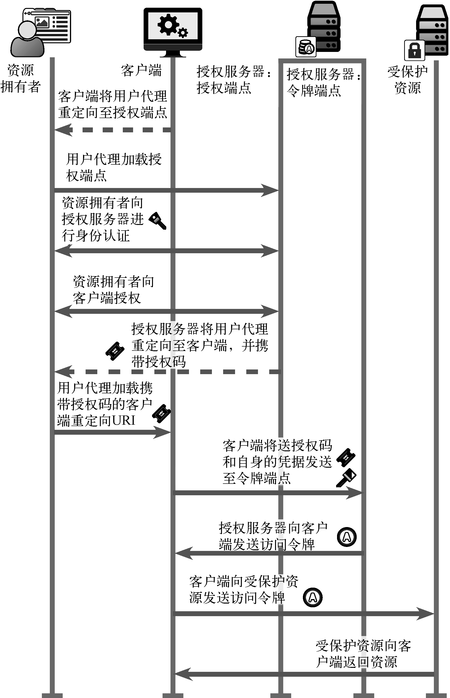首先，资源拥有者访问客户端应用，并表明他希望客户端代表自己去使用某一受保护资源。
当客户端发现需要获取一个新的的 OAuth 访问令牌时，它会将资源拥有者重定向至授权服务器，并附带一个授权请求，表示它要向资源拥有者请求一些权限。
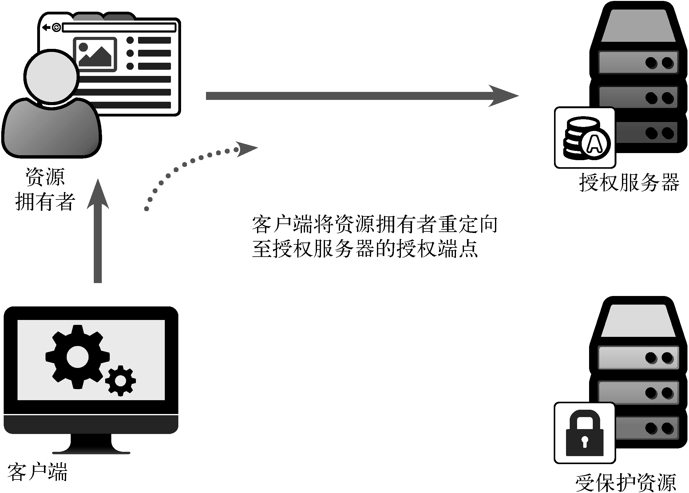由于我们使用的是 Web 客户端，因此采用 HTTP 重定向的方式将用户代理重定向至授权服务器的授权端点。客户端应用的响应如下所示：
1 | 302 Moved Temporarily |
这个重定向响应导致浏览器向授权服务器发送一个 GET 请求。
1 | GET /authorize?response_type=code&scope=foo&client_id=oauth-client -1&redirect_uri=http%3A%2F%2Flocalhost%3A9000%2Fcallback&state=Lwt50DDQKUB8U7jtfLQCVGDL9cnmwHH1 HTTP/1.1 |
客户端通过在发送给用户的 URL 中包含查询参数，来标识自己的身份和要请求的授权详情，如授权范围等。
然后，授权服务器会要求用户进行身份认证。这一步对确认资源拥有者的身份已经能向客户端授予哪些权限来说至关重要。
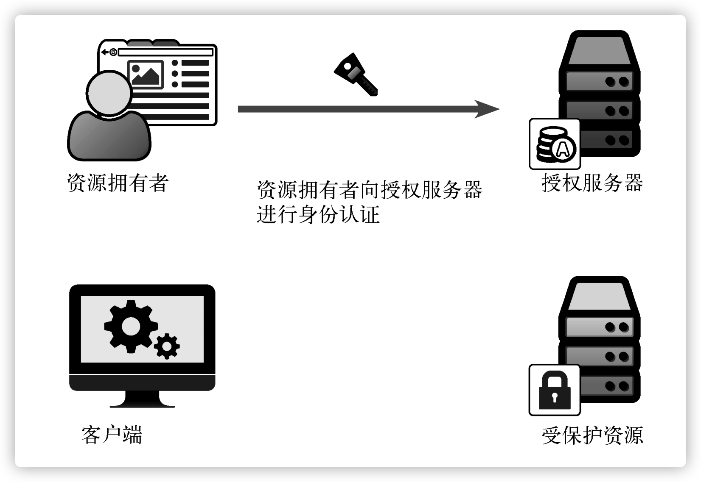用户身份认证直接在用户（和用户的浏览器）与授权服务器之间进行，这个过程对客户端应用不可见。这一重要特性避免了用户将自己的凭据透露给客户端应用，对抗这种反模式正是发明 OAuth 的原因。
另外，因为资源拥有者通过浏览器与授权端点交互，所以也要通过浏览器来完成身份认证。 因此，有很多身份认证技术可以用于用户身份认证流程。OAuth 没有规定应该使用哪种身份认证 技术，授权服务器可以自由选择，例如用户名/密码、加密证书、安全令牌、联合单点登录或者 其他方式。在此我们不得不在一定程度上信任 Web 浏览器，特别是当资源拥有者使用像用户名 和密码这样的简单身份认证方式时。但是 OAuth 的设计已经考虑了如何防止多种基于浏览器的攻击。
这种隔离方案还使得客户端不会因用户身份认证方式发生变化而受到影响, 让简单的客户端应用也能受益于授权服务器使用的一些新兴技术，例如基于风险的启发式认证(risk-based heuristic authentication)技术。然而，这种做法并没有向客户端传递任何有关认证用户的信息，在将 OAuth 2.0 用于用户身份认证一章将深入讨论这个话题。
然后，用户向客户端应用授权。在这一步，资源拥有者选择将一部分权限授予客户端应用，授权服务器提供了许多不同的选项来实现这一点。 客户端可以在授权请求中指明其想要获得哪些权限(称为 OAuth 权限范围) 。授权服务器可以允许用户拒绝一部分或者全部权限范围，也可以让用户批准或者拒绝整个授权请求。
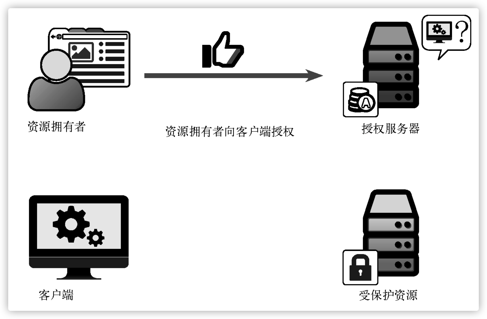此外，很多授权服务器允许将授权决策保存下来，以便以后使用。如果使用了这种方式，那么未来同一个客户端请求同样的授权时，用户将不会得到提示。 用户仍然会被重定向到授权端点，并且仍然需要登录，但是会跳过批准授权环节而沿用前一次的授权决策。 授权服务器甚至可以通过像客户端白名单或黑名单这样的内部策略来否决用户的决策。
然后，授权服务器将用户重定向回客户端应用。
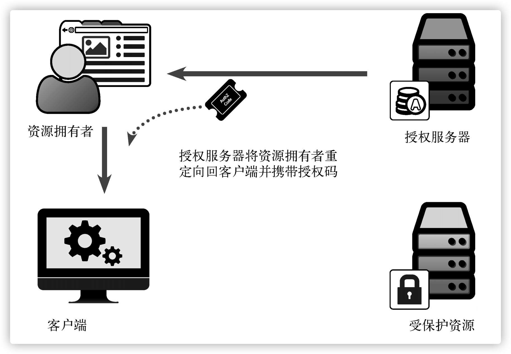这一步采用 HTTP 重定向的方式，回到客户端的 redirect_uri。
1 | HTTP 302 Found |
这又会导致浏览器向客户端发出如下请求。
1 | GET /callback?code=8V1pr0rJ&state=Lwt50DDQKUB8U7jtfLQCVGDL9cnmwHH1 HTTP/1.1 |
请注意，这个 HTTP 请求是发送给客户端而不是授权服务器的。
1 | User-Agent: Mozilla/5.0 (Macintosh; Intel Mac OS X 10.10; rv:39.0) Gecko/20100101 Firefox/39.0 |
由于使用的是授权码许可类型，因此该重定向链接中包含一个特殊的查询参数 code。这个参数的值被称为授权码，它是一次性的凭据，表示用户授权决策的结果。客户端会在接收到请求之后解析该参数以获取授权码，并在下一步使用该授权码。客户端还会检查 state 参数值是否与它在前一个步骤中发送的值匹配。
现在客户端已经得到授权码，它可以将其发送给授权服务器的令牌端点。
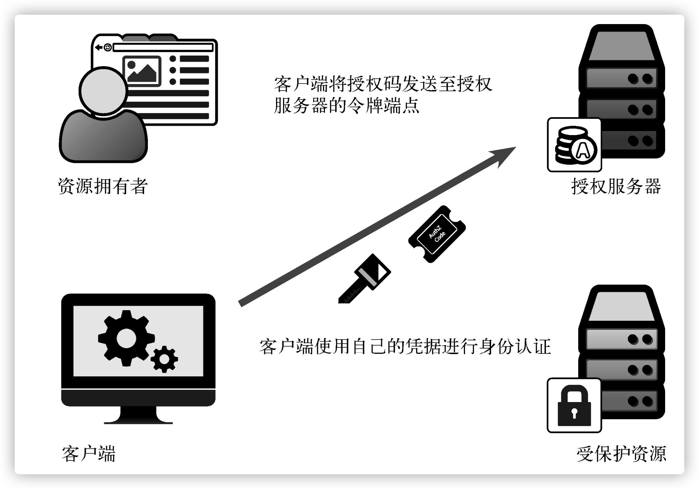客户端发送一个 POST 请求，在 HTTP 主体中以表单格式传递参数，并在 HTTP 基本认证头部中设置 client_id 和 client_secret。这个 HTTP 请求由客户端直接发送给授权服务器，浏览器或者资源拥有者不参与此过程。
1 | POST /token |
这种将不同的 HTTP 连接分开的做法保证了客户端能够直接进行身份认证，让其他组件无法查看或者操作令牌请求。
授权服务器接收该请求，如果请求有效，则颁发令牌。授权服务器需要执行多个步骤以确保请求是合法的。首先，它要验证客户端凭据（通过 Authorization 头部传递）以确定是哪个客户端请求授权。然后，从请求主体中读取 code 参数的值，并从中获取关于该授权码的信息，包括发起初始授权请求的是哪个客户端，执行授权的是哪个用户，授权的内容是什么。如果授权码有效且尚未使用过，而且发起该请求的客户端与最初发起授权请求的客户端相同，则授权服务器会生成一个新的访问令牌并返回给客户端。
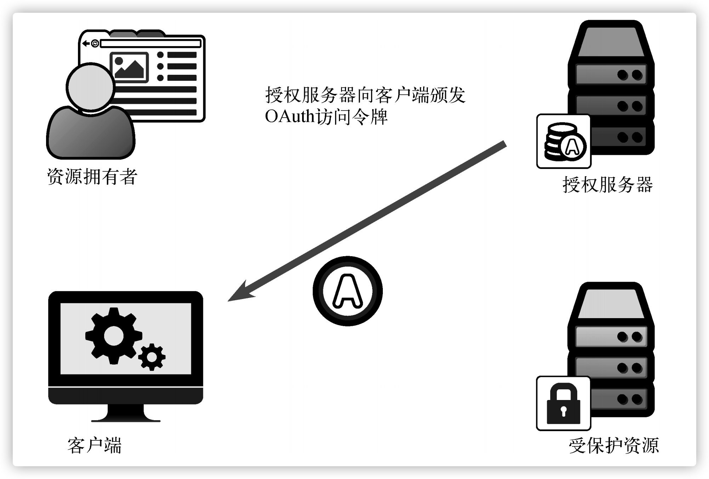该令牌以 JSON 对象的格式通过 HTTP 响应返回给客户端。
1 | HTTP 200 OK Date: Fri, 31 Jul 2015 21:19:03 GMT |
然后客户端可以解析令牌响应并从中获取令牌的值来访问受保护资源。在这个案例中，我们使用了 OAuth bearer 令牌，这是通过响应中的 token_type 字段描述的。令牌响应中还可以包含一个刷新令牌（用于获取新的访问令牌而不必重新请求授权），以及一些关于访问令牌的附加信息，比如令牌的权限范围和过期时间。客户端可以将访问令牌存储在一个安全的地方，以便以后在用户不在场时也能够随时使用。
有了令牌，客户端就可以在访问受保护资源时出示令牌。
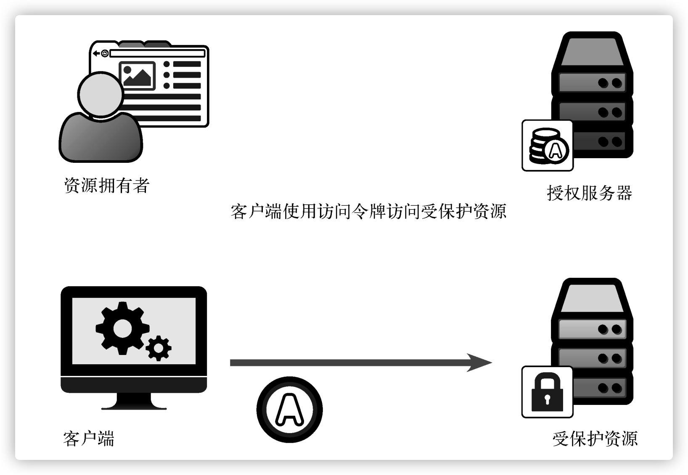客户端出示令牌的方式有多种，本例中将使用备受推荐的方式：使用 Authorization 头部。
1 | GET /resource HTTP/1.1 |
受保护资源可以从头部中解析出令牌，判断它是否有效，从中得知授权者是谁以及授权内容，然后返回响应。受保护资源检查令牌的方式有多种。最简单的方式是让授权服务器和资源服务器共享存储令牌信息的数据库。授权服务器在生成新的令牌时将其写入数据库，资源服务器在收到令牌时从数据库中读取它们。
授权许可类型
授权许可是 OAuth 协议中的权限获取方法，OAuth 客户端用它来获取受保护资源的访问权限，成功之后客户端会得到一个令牌。这可能是 OAuth 2.0 中最令人困惑的术语之一，因为它既表示用户授权所用的特定方式，也表示授权这个行为本身。前面详细介绍过的授权码许可类型加剧了这种困惑，因为开发人员有时候会看见传回给客户端的授权码，并误以为这个授权码（仅授权码）就是授权许可。虽然授权码确实代表用户的授权决策，但它不是授权许可本身。相反，整个 OAuth 流程才是授权许可：客户端将用户重定向至授权端点，然后接收授权码，最后用授权码换取令牌。
换句话说，授权许可就是获取令牌的方式。就像在 OAuth 社区中一样，会偶尔将其称为 OAuth 协议的一个流程（OAuth flow）。OAuth 协议中有多种授权许可方法，并且各有特点。
授权码许可机制 - authorization_code
授权码许可机制在上一节已经详细描述过，它是最复杂也是最安全的授权许可类型。
隐式许可类型 - implicit
授权码许可流程中各个步骤的关键是不同组件之间保持信息隔离。通过这种方式，浏览器接触不到只应由客户端掌握的信息，客户端也无法得知浏览器的状态。但是如果把客户端放在浏览器内部运行，会怎么样呢？
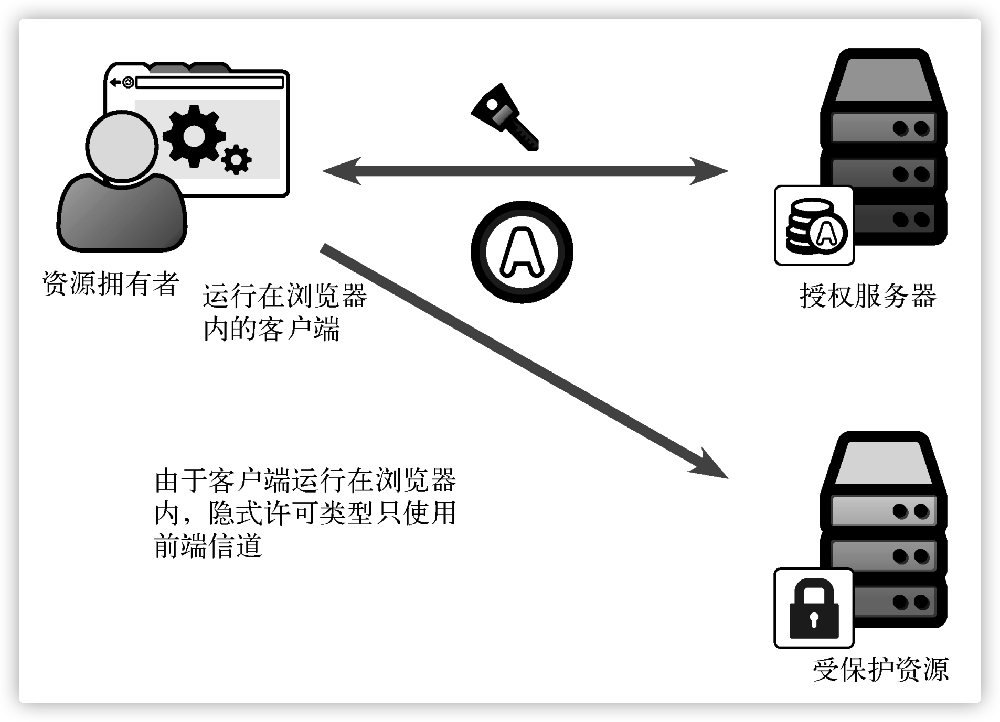完全运行在浏览器中的 JavaScript 应用就属于这种情况。客户端无法对浏览器隐藏任何秘密， 因为浏览器对客户端的任何动作都了如指掌。在这种情况下，通过浏览器向客户端传递仅用于换 取令牌的授权码就没有任何实际意义了，因为这个额外的保密层没有起到任何作用。
隐式许可类型没有使用这个额外的保密层，而是直接从授权端点返回令牌。
在使用隐式许可类型时需要对它严苛的局限性有所认识。首先，使用这种许可流程的客户端 无法持有客户端密钥，因为无法对浏览器隐藏密钥。但由于这种许可流程只使用授权端点而不使 用令牌端点，因此这个限制不会影响其功能，因为不要求客户端在授权端点上进行身份认证。然 而，由于缺少对客户端进行身份认证的手段，确实会影响这种许可类型的安全等级，因此要谨慎 使用。另外，隐式许可流程不可用于获取刷新令牌。因为浏览器内的应用具有短暂运行的特点，只会在被加载到浏览器的期间保持会话，所以刷新令牌在这里的作用非常有限。而且，和其他许 可类型不同，这种许可类型会假设资源拥有者一直在场，必要时可以对客户端重新授权。
客户端向授权服务器的授权端点发送请求时，使用的方式与授权码流程相同，只不过 response_type 参数的值为 token，而不是 code。这样会通知授权服务器直接生成令牌，而不是生成一个用于换取令牌的授权码。
1 | 302 Moved Temporarily |
客户端通过页面跳转或者在页面内使用内联框架（iframe）来执行这个请求。无论使用哪种方式，浏览器都会向授权服务器的授权端点发送请求。和授权码许可流程一样，资源拥有者自行进行身份认证，然后对客户端授权。但是，这一次授权服务器会直接生成令牌，并在授权端点响应中将令牌附在 URI 片段中。不要忘了，由于这是前端信道，对客户端的响应是通过重定向来完成的，重定向地址是客户端的重定向 URI。
1 | GET /callback#access_token=987tghjkiu6trfghjuytrghj&token_type=Bearer |
URI 中的片段部分通常不会发送至服务器，这样令牌就只能在浏览器内使用。但请注意，这一行为会因浏览器的实现和版本而异。
客户端凭据许可类型 - client_credentials
如果没有明确的资源拥有者，或对于客户端软件来说资源拥有者不可区分，该怎么办？这是 一种相当常见的场景，比如后端系统之间需要直接通信，但是它们并不一定代表某个特定用户。 没有用户对客户端授权，还能使用 OAuth 吗？
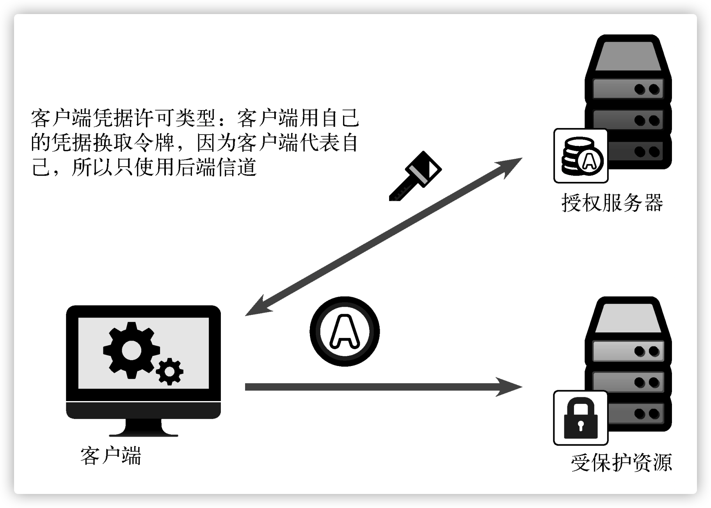OAuth 2.0 增加了客户端凭据许可类型，可用于这种场景。在隐式许可流程中，客户端被置于浏览器中，也就是在前端信道上；而在这种许可流程中，资源拥有者被塞进客户端，也就没有用户代理存在了。因此，这种许可流程只使用后端信道，客户端代表自己（它自己就是资源拥有者）从令牌端点获取令牌。
客户端向授权服务器的令牌端点发出令牌请求，这与授权码流程是一样的，只不过这一次使用 client_credentials 作为 grant_type 参数的值，而且没有授权码或者其他用于换取令牌的临时凭据。相反，客户端直接向授权服务器进行身份认证，而授权服务器给客户端颁发访问令牌。客户端也可以使用 scope 参数指定请求的权限范围，其用法与授权码和隐式许可流程中在授权端点上使用的 scope 参数一样。
1 | POST /token |
授权服务器返回的响应就是一个普通的 OAuth 令牌端点响应：一个包含令牌信息的 JSON 对象。在客户端凭据许可流程中不会颁发刷新令牌，因为我们认为客户端能够随时获取新令牌，无须单独的资源拥有者参与，因此在这种情况下没有必要使用刷新令牌。
1 | HTTP 200 OK |
资源拥有者凭据许可类型 - password
如果资源拥有者在授权服务器上有纯文本的用户名和密码，那么客户端可以向用户索取用户的凭据，然后用这个凭据换取令牌。支持客户端这样做的是资源拥有者凭据许可类型，也叫作密码流程。资源拥有者与之直接交互的是客户端，而不是授权服务器。这种许可类型只使用令牌端点，并且只通过后端信道通信。
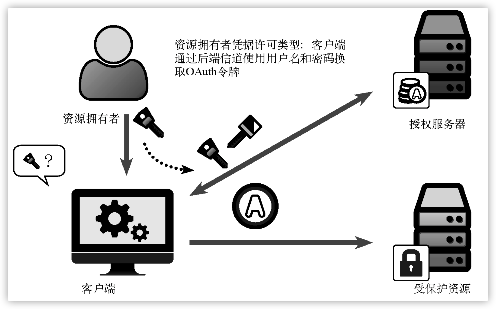为什么将这一反模式编入规范？
当有其他选择的时候，这种许可类型确实是一个坏主意，但并不总是有其他选择。这种许可类型是为那些通常要求资源拥有者输入 用户名和密码，然后向所有受保护资源使用这些凭据的客户端而准备的。
一方面，受保护资源无须再查看用户密码，而只需要处理 OAuth 令牌。 这立马缩小了用户凭据在网络上的暴露面，也减少了需要查看用户凭据的组件数量。另一方面， 对这一许可类型运用得当的客户端应用不再需要存储用户密码，也无须向资源服务器发送密 码。客户端使用用户凭据换取访问令牌，用于访问不同的受保护资源。结合刷新令牌的使用， 用户体验没有变化，但安全等级相对于之前的方案有了很大提高。虽然授权码许可类型是首选， 但这种许可类型有时也比在每个请求中使用用户密码好得多。
这种许可类型的工作方式很简单。客户端收集用户的用户名和密码（使用什么样的交互接口 由客户端决定），然后将它们发送至授权服务器。
1 | POST /token |
授权服务器从收到的请求中取出用户名和密码，并与本地存储的用户信息对比。如果匹配， 则授权服务器向客户端颁发令牌。
断言许可类型 - assertion
断言许可类型是由 OAuth 工作组发布的第一个官方扩展许可类型[1]。在这种许可类型下，客 户端会得到一条结构化的且被加密保护的信息，叫作断言，使用断言向授权服务器换取令牌。可以把断言想象为某种经过认证的文档，例如文凭或者许可证。只要你信任认证机构能确保声明的真实性，就可以相信文档中的内容也是真实的。
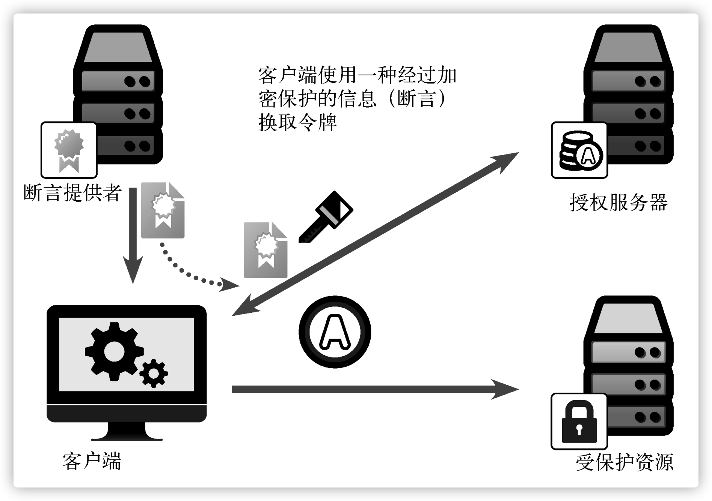
目前有两种标准化的断言格式：一种使用安全断言标记语言（SAML）[2]，另一种使用 JSON Web Token（JWT[3]）。这种许可类型只使用后端信道，与客户端凭据许可类型很相似，没有明确的资源拥有者参与。与客户端凭据流程不同的是，由此颁发的令牌所关联的权限取决于所出示的断言，而不仅仅取决于客户端本身。由于断言一般来自于客户端之外的第三方， 因此客户端可以不知道断言本身的含义。 与其他后端信道流程类似，客户端要向授权服务器的令牌端点发送一个 HTTP POST 请求。 客户端需要像往常一样进行身份认证，还要将断言作为参数传递给授权服务器。客户端获取断言的方式多种多样，而且很多关联协议没有涵盖这方面的内容。客户端可以从用户那里获得断言， 也可以从某个配置系统或者通过其他非 OAuth 协议获得断言。与访问令牌一样，最终只要客户端能向授权服务器出示断言即可，至于客户端如何获得断言则不是该许可类型所关心的。
这种许可类型在实现上与其他只使用后端信道的流程类似，都是由客户端向令牌端点出示信息，然后授权服务器直接颁发令牌。在现实世界中，你可能会发现断言许可类型仅用于有限的环境中，通常是企业。
选择合适的许可类型
有这么多的许可类型，似乎很难判定到底哪一个才最合适。所幸，有一些好用的基本法则能 够指导你做出正确的选择。
**客户端是否代表特定的资源拥有者？**你是否可以通过用户的 Web 浏览器将其引导至一个网页？如果可以，就使用基于重定向的许可流程：授权码或者隐式许可流程。至于使用哪个，取决于客户端。
**客户端是否完全运行在浏览器内？**这不包括在服务器上运行但用户界面需要通过浏览器访问的应用，只有从启动到消亡都完全在浏览器内执行的应用才算。如果是这样，则应该使用隐式许可类型，因为它就是专门针对此情况而做的优化。如果不是，则要么运行在 Web 服务器上， 要么原生运行在用户的计算机上，这种情况下应该使用授权码许可类型，因为这种类型具有最强的安全性和灵活性。
**客户端是原生应用吗？**你应该已经在使用授权码许可流程了，还应该在授权码许可类型的基础上使用特定的安全扩展，比如动态注册 （DynReg）或者代码交换证明密钥（PKCE）。
**客户端代表自身吗？**这种情况包括不针对单个用户的 API 访问，比如大批量数据传输。如果是这样，则应该使用客户端凭据许可流程。如果你使用的 API 需要通过参数指定作用于哪个用户， 则应该考虑使用基于重定向的许可流程，因为这样才能实现个性化的审核和同意。 **客户端是否在权威性第三方的指示下运行？**这个第三方是否能直接提供一些证明，让你能够代表它执行任务？如果是这样，则应该使用断言许可流程。使用哪种断言许可则取决于授权服务 器和颁发断言的第三方。客户端是否无法在浏览器中对用户重定向？用户是否具有能够提供给你的简单用户凭据？ 是否没有其他选择？如果是这样，那么可以使用资源拥有者凭据许可流程，但要注意它的局限性。 别说我们没提醒过你。
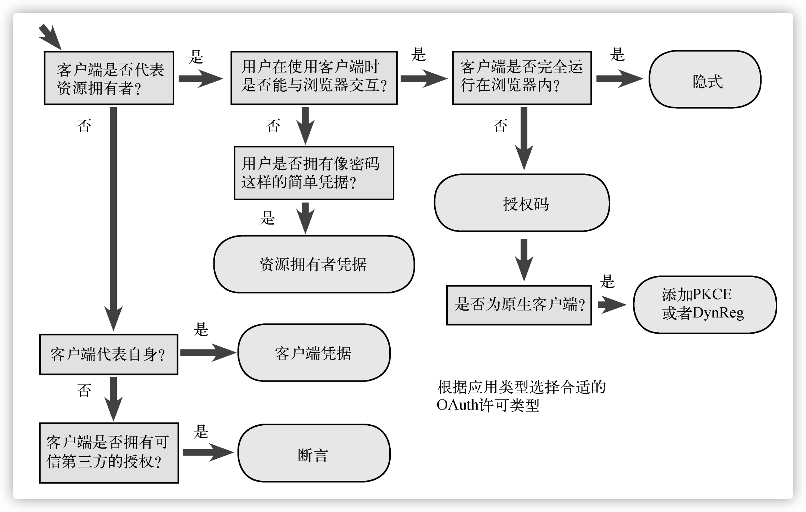
OAuth 令牌
令牌是所有 OAuth 事务的核心。客户端从授权服务器获取令牌，然后出示给受保护资源。 授权服务器生成令牌并发送给客户端，将资源拥有者的授权与客户端权限信息一起关联到令牌。 受保护资源从客户端接收令牌并对其进行验证，将其关联的权限与客户端发出的请求进行匹配。
令牌表示的是授权行为的结果：一个信息元组，包括资源拥有者、客户端、授权服务器、受 保护资源、权限范围以及其他与授权决策有关的信息。如果客户端需要更新访问令牌却不想再次 打扰资源拥有者，则要使用另一种令牌：刷新令牌。令牌是位于 OAuth 生态系统中心的关键机制， 可以说没有令牌就没有 OAuth。所以，OAuth 的非官方标志很像一枚公共汽车乘车币（bus token）。
一切聚焦于令牌，然而 OAuth 规范完全没有提及令牌所包含的内容。之前已经讨论过，OAuth 系统中的客户端无须了解令牌本身的任何信息。客户端需要知道的就是如何从授权 服务器获取令牌以及如何在资源服务器上使用令牌。但是，授权服务器和资源服务器需要了解令牌的内容。授权服务器要知道如何生成令牌来颁发给客户端，资源服务器要知道如何识别并验证客户端发送过来的令牌。
为什么 OAuth 核心规范会将如此重要的内容省略呢？不对令牌本身做出规定，使得 OAuth 能够广泛适用于各种部署场景，它们的特性、风险状况以及要求各不相同。OAuth 令牌可以具有有效期，可以支持撤回，也可以永久有效，或者根据情况将这些特性组合。令牌可以代表特定的用户或者系统中所有的用户，也可以不代表任何用户。令牌可以具有内部结构，可以是随机的无意义字符串，也可以被加密保护，甚至可以将这几项结合起来。这种灵活性和模块化特性使 OAuth 具备了良好的适应性，而这是那些更全面的安全协议（比如 WS-*、SAML 和 Kerberos）无法做到的，它们都对令牌格式做出了规定，并且要求系统的所有部件都能理解令牌格式。
不过，还有几种常用的创建和验证令牌的技术，它们都有各自的优缺点，能够适用于不同的场景。
授权服务器生成令牌之后，会将令牌值存储在磁盘上的共享数据库中。当受保护资源从客户 端收到令牌之后，它会在同一个数据库中查找令牌值，以确定令牌有效。这种令牌不携带任何信息，只是充当数据库查询的检索值。这种创建和管理令牌的方法非常有效且常见，而且它的优势是在保持令牌本身短小的同时满足较大的信息熵。 在授权服务器和受保护资源间共享数据库并不总是实际可行，特别是在一个授权服务器需要保护下游的多个资源服务器的情况下。该如何解决这个问题呢？本章将讨论另外两种常见的方案：结构化令牌和令牌内省。
结构化令牌：JWT
如果不向共享数据库查询，是否可以将所有必要的信息放在令牌内部？这种方式使授权服务器可以通过令牌本身间接地与受保护资源沟通，而不需要调用任何网络 API。 通过这种方式，授权服务器可以将受保护资源需要知道的信息全部打包，比如令牌的过期时间戳以及授权用户是谁。这些信息都会被发送给客户端，但是客户端并不关心，因为令牌在所有 OAuth 2.0 系统中对客户端都不透明。只要客户端得到令牌，就可以将其当作一个随机字符串发送给受保护资源。受保护资源需要理解令牌，并解析令牌内包含的信息，然后基于这些信息做出授权决策。
JWT 的结构
完整的 JSON Web 令牌的紧凑形式由三个部分组成，由点（.）分隔，它们是：
- Header - 头部
- Payload - 荷载
- Signature - 签名
整个 JWT 都是经过 Base64URL 编码过的字符串，便于传输。
为了构建这样的令牌，需要一种方法来组织并序列化所要携带的信息。JSON Web Token 令牌格式， 或者叫作 JWT，提供了一种在令牌中携带信息的简单方法。JWT 的核心是将一个 JSON 对象封装为一种用于网络传输的格式。JWT 最简单的形式是一个未签名的令牌，如下所示。
1 | eyJ0eXAiOiJKV1QiLCJhbGciOiJub25lIn0.eyJzdWIiOiIxMjM0NTY3ODkwIiwibmFtZSI6IkpvaG4gRG9lIiwiYWRtaW4iOnRydWV9. |
这种令牌看起来与之前使用的随机字符串令牌很相似，但事实并非如此。首先，请注意其中有一个句点符号将字符串分割成了两部分。以句点符号将令牌字符串分解，让我们可以对令牌的不同部分分别进行处理理（示例中最后一个句点符号后面还有隐含的第三部分，在令牌加密保护会进行讨论）。
1 | eyJ0eXAiOiJKV1QiLCJhbGciOiJub25lIn0 |
句点符号之间的值并不是随机的，而是一个经过 Base64URL 编码的 JSON 对象。如果对第一部分进行 Base64 解码并解析出 JSON 对象，会得到一个简单的对象。
1 | { |
为什么选择 Base64？
看一下 JWT 通常会出现在什么环境中就能得出部分答案，它一般会出现在 HTTP 头部、Query 参数、表单参数、各种数据库的字符串以及编程语言中。若无须进行额外的编码处理，这些环境中可用的字符集都有所限制。
采用 Base64URL 编码方案是顺理成章的，它可以让 JWT 安全地出现在任何环节而无须额外的编码处理。
这是 JWT 的头部，它是一个 JSON 对象，用于描述与令牌剩余部分有关的信息。其中的 typ 头告诉处理程序令牌的第二部分（载荷）是何种类型。在我们的示例中，它是一个 JWT。虽然 还有其他的数据容器可以使用与此相同的结构，但是无疑 JWT 是最常用的，并且也最适合作为 OAuth 令牌使用。还有一个 alg 头，它的值是 none，表示这是一个未签名的令牌。
第二部分是令牌的载荷，它的序列化方式与 JWT 头部相同：对 JSON 对象进行 Base64URL 编码。由于它是 JWT，因此其载荷可以是任意的 JSON 对象，在前面的示例中，它是一组简单的用户数据。
1 | { |
JWT 声明 - JWT Claims
除了一般的数据结构之外，JWT 还提供了一组声明，可以在不同的应用中通用。虽然 JWT 内可以包含任何合法的 JSON 数据，但这些声明支持应用的常规操作。所有这些字段在 JWT 中都是可选的，但允许特定服务定义自己的内部标准。
| 声明名称 | 声明描述 |
|---|---|
| iss | Issuer - 令牌颁发者。它表示该令牌是由谁创建的，在很多 OAuth 部署中会将它设为授权服务器的 URL。该声明是一个字符串 |
| sub | Subject - 令牌的主体。它表示该令牌是关于谁的，在很多 OAuth 部署中会将它设为资源拥有者的唯一标识。在大多数情况下，主体在同一个颁发者的范围内必须是唯一的。该声明是一个字符串 |
| aud | Audience - 令牌的受众。它表示令牌的接收者，在很多 OAuth 部署中，它包含受保护资源的 URI 或者能够接收该 令牌的受保护资源。该声明可以是一个字符串数组，如果只有一个值，也可以是一个不用数组包装的单个字符串 |
| exp | Expiration Time - 令牌的过期时间戳。它表示令牌将在何时过期，以便部署应用让令牌自行失效。该声明是一个整数，表 示自 UNIX 新纪元（即格林威治标准时间 GMT，1970 年 1 月 1 日零点）以来的秒数 |
| nbf | Not Before - 令牌生效时的时间戳。它表示令牌从什么时候开始生效，以便部署应用可以在令牌生效之前颁发令牌。 该声明是一个整数，表示自 UNIX 新纪元（即格林威治标准时间 GMT，1970 年 1 月 1 日零点）以来的秒数 |
| iat | Issued At - 令牌颁发时的时间戳。它表示令牌是何时被创建的，它通常是颁发者在生成令牌时的系统时间戳。该声 明是一个整数，表示自 UNIX 新纪元（即格林尼治时间 GMT，1970 年 1 月 1 日零点）以来的秒数 |
| jti | JWT ID - 令牌的唯一标识符。该声明的值在令牌颁发者创建的每一个令牌中都是唯一的，为了防止冲突，它通常 是一个密码学随机值。这个值相当于向结构化令牌中加入了一个攻击者无法获得的随机熵组件，有利于防止令牌猜测攻击和重放攻击 |
仍然可以为特定的应用新增其他所需的字段。这些字段的字段名可以是任何有效的 JSON 字符串，这对于其他 JSON 对象也是一样，但尽 管如此，为避免不同的实现之间不兼容，JWT 规范在这一点上给出了一些指导意见。
令牌的加密保护
如果授权服务器发出的令牌是不经过任何保护的，并且受保护资源不进行任何其他检查就相信令牌中的内容，那么对于以明文形式接收令牌的客户端来说，很容易就能在向受保护资源出示令牌之前篡改令牌内容。客户端甚至可以在不与授权服务器通信的情况下就自行伪造一个令牌出来，而资源服务器还是会天真地接受并处理。
所幸，恰好有一套规范可以解决这个问题：JSON 对象的签名和加密标准 Javascript Object Signing and Encryption (JOSE)。这套规范以 JSON 为基础数据模型，提供了签名（JSON Web Signing 签名，或称 JWS）、加密（JSON Web Encryption 加密，或称 JWE）以及密钥存储格式（JSON Web Key 密钥，或称 JWK）的标准。上一节手动创建的未签名的 JWT，只不过是一个带有 JSON 载荷的未签名 JWS 对象的特例。
签名
签名的目的是用于验证消息的数据完整性和真实性，它生成 JWT 的“Signature”部分，令牌的接收者可以验证该签名，以确保令牌没有被篡改。
虽然将 JOSE 的细节展开来讲可以单独写一本书，但我们着眼于它的两项内容：使用 HMAC 签名方案的对称签名和验证，以及使用 RSA 签名方案的非对称签名和验证。
使用 HS256 的对称签名
HS256（使用 SHA-256 的 HMAC）是一种对称算法，双方之间共享一个密钥。由于同一密钥用于生成签名和验证签名，因此必须注意确保密钥不会被盗用。
HS256 为令牌签名计算 256 字节的散列，JOSE 还定义了 HS384 和 HS512，它们计算的散列长度更长，从而换取更高的安全性。
如果您将开发使用 JWT 的应用程序，您可以安全地使用 HS256，因为您将控制谁使用密钥。另一方面，如果您无法控制客户端，或者您无法保护密钥，RS256 将更合适，因为消费者只需要知道共享的公钥。
在加密技术中，HMAC（ hash-based message authentication code - 基于散列的消息认证码）是一种特定类型的消息认证码（message authentication code - MAC），包含加密散列函数和密钥两部分。与任何 MAC 一样，它可用于同时验证消息的数据完整性和真实性。
HMAC 可以使用共享密钥提供消息身份验证，而不是使用非对称加密的数字签名。它通过将密钥交换委托给通信各方来权衡对复杂公钥基础设施的需求，通信各方负责在通信前建立和使用受信任的渠道就密钥达成一致。
HMAC 可以包含任意的加密散列函数算法，比如常见的 MD5、SHA256、SHA512 等。
使用 RS256 的非对称签名
RS256 签名方法，它在底层使用 RSA 非对称加密算法。它对 RSA 签名结果计算 256 字节的散列。 JOSE 同样也定义了 RS384 和 RS512，与对应的对称签名方法一样，它们提供不同的折中选择。JOSE 还定义了 PS256、PS384 和 PS512，它们都基于另一种 RSA 签名和散列机制。
使用公钥加密的话，授权服务器拥有公钥和私钥，可用于生成令牌，而受保护资源则只能访问授权服务器的公钥，用于验证令牌。与使用共享密钥不同的是，受保护资源虽然能够很容易地验证令牌，但它无法自己生成有效的令牌。
加密
然而，有时候仅签名是不够的。对于仅被签名的令牌，客户端还是可以偷窥令牌本身，从中获取它本无权知道的信息，比如 sub 字段中的用户标识符。令人欣慰的是，除了签名之外，JOSE 还提供了一个叫作 JWE 的加密机制，包含几种不同的选项和算法。经过 JWE 加密的 JWT 不再只由 3 部分组成，而是由 5 部分组成的结构。各个部分仍然使用 Base64URL 编码，只是载荷现在变成了一个经过加密的对象，没有正确的密钥无法读取其内容。
首先，为资源服务器设置一个密钥对，并将密钥对中的公钥提供给授权服务器。然后，授权服务器使用 JWE 以及密钥对中的公钥对令牌内容加密。最后，资源服务器使用它自己的私钥解密令牌内容，并将令牌载荷交给应用。
OpenID Connect
OAuth 2.0 规范定义了一个授权协议，用于在 Web 应用以及 API 之间传递授权决策。因为 OAuth 2.0 用于获取已通过身份认证的最终用户的许可，所以很多开发人员和 API 服务商认为 OAuth 2.0 是一种让用户安全登录的身份认证协议。然而，尽管 OAuth 2.0 是一个需要用户交互的安全协议，但并不是身份认证协议。
但是在 OAuth 之上构建身份认证协议是可行的。
OpenID Connect 是一个开放标准，由 OpenID 基金会于 2014 年 2 月发布。它定义了一种使用 OAuth 2.0 执行用户身份认证的互通方式。由于该协议的设计具有互通性，一个 OpenID 客户端应用可以使用同一套协议语言与不同的身份提供者交互，而不需要为每一个身份提供者实现一套有细微差别的协议。
OpenID Connect 直接基于 OAuth 2.0 构建，并保持与它兼容。
RFC 7521：https://tools.ietf.org/html/rfc7521 ↩︎
RFC 7522：https://tools.ietf.org/html/rfc7522 ↩︎
RFC 7523：https://tools.ietf.org/html/rfc7523 ↩︎